Input data (legacy)
Intro
(Note! This page details the previous format of the input data, that can be used with the SOM model by pre-processing it. To do so, make sure to set the use_legacy_input_data option to true in the configuration file)
The input data consists of three files:
- exampleData.xlsx
- exampleEffect.xlsx
- examplePressureState.xlsx
Example data has been provided in the data directory.
Please note that most column names are case sensitive.
General Input
exampleData.xlsx contains descriptions of the model domain:
ID sheets
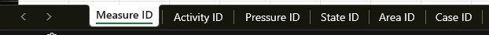
sheet:Measure ID
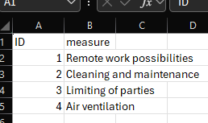
- Unique identifiers for measures
sheet:Activity ID
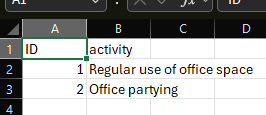
- Unique identifiers for activities
sheet:Pressure ID
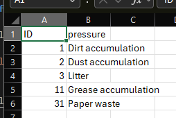
- Unique identifiers for pressures
sheet:State ID
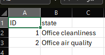
- Unique identifiers for states
sheet:Area ID
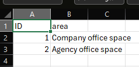
- Unique identifiers for areas
sheet:Case ID
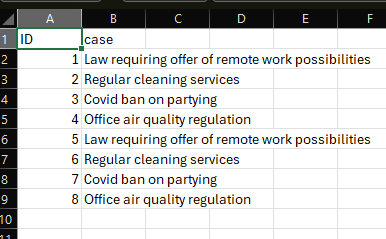
- Unique identifiers for cases
sheet:ActMeas
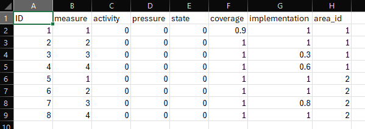
- Implemented measure cases, all rows are independent, multiple IDs can be joined by a semi-colon.
column:ID: Unique case id, linked tosheet:Case IDcolumn:measure: Measure type ID, linked tosheet:Measure IDcolumn:activity: Relevant Activities, linked tosheet:Activity ID, the value 0 (zero) means all relevant activities affected by the measurecolumn:pressure: Relevant Pressures, linked tosheet:Pressure ID, the value 0 (zero) means all relevant pressures affected by the measurecolumn:state: Relevant States, linked tosheet:State ID, the value 0 (zero) means all relevant states affected by the measurecolumn:coverage: Multiplier (fraction), represents how much of the area is covered by the measurecolumn:implementation: Multiplier (fraction), represents how much of the measure is implementedcolumn:area_id: Area ID, linked tosheet:Area ID
sheet:ActPres
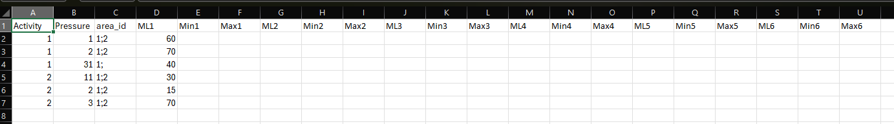
- Activity-Pressure links, how much the individual activities contribute to the pressures
column:Activity: Activity ID, linked tosheet:Activity IDcolumn:Pressure: Pressure ID, linked tosheet:Pressure IDcolumn:area_id: Area ID, linked tosheet:Area ID, multiple IDs can be joined by a semi-coloncolumn:Ml#: Most likely contribution (%)column:Min#: Lowest potential contribution (%)column:Max#: Highest potential contribution (%)
sheet:DEV_scenarios
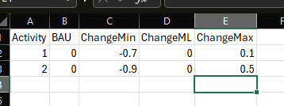
- Activity development scenarios
column:Activity: Activity ID, linked tosheet:Activity IDcolumn:BAU: Business As Usual, how much the activity will change without extra action (fraction)column:ChangeMin: Lowest potential change (fraction)column:ChangeML: Most likely change (fraction)column:ChangeMax: Highest potential change (fraction)
sheet:Overlaps
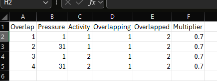
- Interaction between separate measures, how joint implementation affects measure efficiency
column:Overlap: Overlap IDcolumn:Pressure: Pressure ID, linked tosheet:Pressure IDcolumn:Activity: Activity ID, linked tosheet:Activity IDcolumn:Overlapping: Overlapping measure ID, linked tosheet:Measure IDcolumn:Overlapped: Overlapped measure ID, linked tosheet:Measure IDcolumn:Multiplier: Multiplier (fraction), how much of thecolumn:Overlappedmeasure's effect will be observed ifcolumn:Overlappingis also implemented
sheet:SubPres
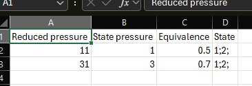
- Links between separate pressures, where subpressures make up part of state pressures
column:Reduced pressure: Subpressure ID, linked tosheet:Pressure IDcolumn:State pressure: State pressure ID, linked tosheet:Pressure IDcolumn:Equivalence: Equivalence betweencolumn:Reduced pressureandcolumn:State pressure, i.e. how much of the state pressure is made up of the subpressure, where values between 0 and 1 are treated as fractions, and other values as either no quantified equivalence or no reduction from pressurescolumn:State: State ID, linked tosheet:State ID
Measure efficiencies
exampleEffect.xslx contains survey data on the effects of measures on activity-pressure pairs as surved by expert panels:
sheet:MTEQ
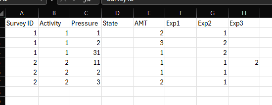
- General information on the survey questions, each row corresponds to a unique activity-pressure pair, the value 0 (zero) for the Activity, Pressure and State columns is used to denote no value, used for direct to pressure / direct to state measures
column:Survey ID: Survey ID, each unique id corresponds to a specific sheet inexampleEffect.xslxcolumn:Activity: Activity ID, linked toexampleData.xlsx:Activity IDcolumn:Pressure: Pressure ID, linked toexampleData.xlsx:Pressure IDcolumn:State: State ID, linked toexampleData.xlsx:State IDcolumn:AMT: Amount of measures linked to the activity-pressure pair in the corresponding survey sheetcolumn:Exp#: Expert columns, details the number of experts that gave each answer, used for weighting
sheet:Surveys
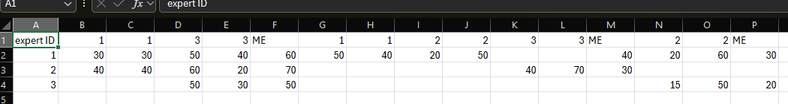
- Survey sheets detailing the effects of the measures on the activity-pressure pairs in
sheet:MTEQcolumn:expert ID: Expert ID, linked to the corresponding expert columns insheet:MTEQcolumn:#: Measure IDs as columns, linked toexampleData.xlsx:Measure ID, each measure takes two columns- the first column describes the most likely reduction (%) of the measure on the activity-pressure pair
- the second column describes the potential uncertainty range (%) regarding the reduction
column:ME: The actual effect of the most effective measure for the current activity-pressure pair
Pressure contributions and GES thresholds
examplePressureState.xlsx contains survey data on pressure contributions to states and total pressure load reduction targets:
sheet:PSQ
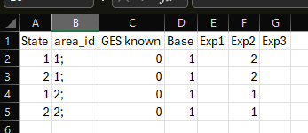
- General information on the survey questions, each row corresponds to a unique state-area pair
column:State: State ID, linked toexampleData.xlsx:State IDcolumn:area_id: Area ID, linked toexampleData.xlsx:Area ID, multiple IDs can be joined by a semi-coloncolumn:GES known: Is the GES threshold known, 0 for no, 1 for yescolumn:Exp#: Expert columns, details the number of experts that gave each answer, used for weighting
sheet:Surveys
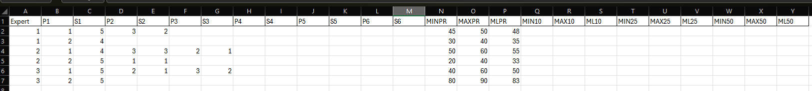
- Survey sheets detailing the contributions of individual pressures to states and the total pressure load reduction targets for the state, the targets are for PR (=GES), 10 %, 25 % and 50 % improvement in state
column:Expert: Expert ID, linked to the corresponding expert columns insheet:PSQ, each expert's answers comprise a block of rows corresponding to the state-area pair rows insheet:PSQcolumn:P#: Pressure IDs, linked toexampleData.xlsx:Pressure IDcolumn:S#: Significance of correspondingcolumn:P#, used when weighing contributions of each pressurecolumn:MIN#: Lowest potential threshold value (%)column:MAX#: Highest potential threshold value (%)column:ML#: Most likely threshold value (%)